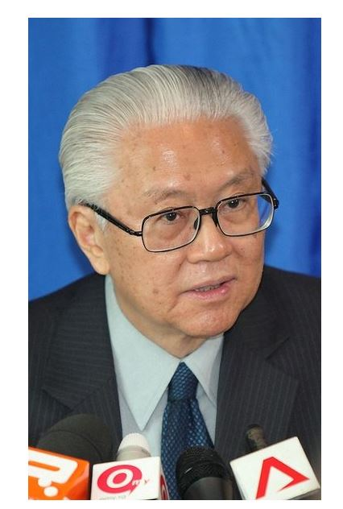

การปกครองของประเทศสิงคโปร์

ประธานาธิบดี : นายโทนี ตัน เค็ง ยัมประเทศสิงคโปร์ ปกครองในระบอบสาธารณรัฐประชาธิปไตย มีประธานาธิบดีเป็นประมุข ประธานาธิบดีคนปัจจุบัน คือ นายโทนี ตัน เค็ง ยัม ปัจจุบันอายุ 72 ปี เพิ่งดำรงตำแหน่งประธานาธิบดี เมื่อวันที่ 1 กันยายน พ.ศ. 2554 หลังจากทำคะแนนเฉือนชนะคู่แข่งในการเลือกตั้งประธานาธิบดีสิงคโปร์ ไปเพียง 0.34% จึงได้ดำรงตำแหน่งประธานาธิบดีสิงคโปร์ คนที่ 7 นับแต่นั้นมา
นายกรัฐมนตรี : นายลี เซียน ลุง
นายลี เซียน ลุง ปัจจุบันอายุ 60 ปี เข้าดำรงตำแหน่งนายกรัฐมนตรีของประเทศสิงคโปร์ ต่อจากนายโก๊ะ จ๊ก ตง ตั้งแต่วันที่ 12 สิงหาคม พ.ศ. 2547 ถือเป็นนายกรัฐมนตรีคนที่ 3 ของประเทศ ทั้งนี้ นายลี เซียน ลุง เป็นบุตรชายคนโตของ นายลี กวนยู อดีตนายกรัฐมนตรี
การเข้าเป็นสมาชิกของอาเซียน
ประเทศสิงคโปร์เป็น 1 ใน 5 สมาชิกผู้ก่อตั้งสมาคมอาเซียน โดยการร่วมลงนามในปฏิญญากรุงเทพฯของนายเอส ราชารัตนัม รัฐมนตรีว่าการกระทรวงการต่างประเทศ การเข้าเป็นสมาชิกของสมาคมอาเซียนของสิงคโปร์ ในปี พ.ศ.2510 มีปัจจัยสนับสนุนหลายประการด้วยกัน คือ
1) ความต้องการแสดงตนในเอกราช สืบเนื่องจากประเทศสิงคโปร์มีประวัติศาสตร์ด้านการเมืองการปกครองที่ต้องตกอยู่ภายใต้การปกครองของอาณานิคมชาติตะวันตกหลายชาติมาเป็นระยะเวลายาวนาน ทั้งโปรตุเกส ฮอลันดา และอังกฤษ โดยเคยเป็นเมืองขึ้นของโปรตุเกส ในราวปี พ.ศ.2041 (ค.ศ.1498) และตกอยู่ภายใต้อิทธิพลของฮอลันดาในช่วงศตวรรษที่ 17 และในปี พ.ศ.2369 (ค.ศ.1826( สิงคโปร์ได้ต้องถูกอังกฤษปกครองภายใต้ระบบสเตรตส์เซ็ตเติลเมนท์ (Straits Settlement) ซึ่งรวมอยู่กับเมืองท่าสำคัญ คือ ปีนัง และมะละกา และเมื่ออังกฤษให้เอกราชแก่มาเลเซีย สิงคโปร์มีความจำเป็นต้องผนวกรวมเข้ากับสหพันธรัฐมาเลเซียตามข้อสนับสนุนจากอังกฤษ (พ.ศ.2506) ทั้งๆ ที่สิงคโปร์และมาเลเซียเองต่างก็มีความแตกต่างทางเชื้อชาติ ศาสนา ภาษา และมีการเหยียดชนชาติ โดยมาเลเซียได้รับรองสิทธิของชาวมาเลย์เหนือชนชาติอื่นๆ ซึ่งสิงคโปร์ไม่เห็นด้วย ทำให้พรรคกิจประชาชน (People’s Action Party) ของสิงคโปร์ต้องประกาศตนเอกราชจากมาเลเซีย ในวันที่ 9 สิงหาคม พ.ศ.2508 (ค.ศ.1965) และมีอำนาจอธิปไตยของตนเอง ปกครองในรูปของสาธารณรัฐตั้งแต่นั้นเป็นต้นมา ดังนั้นการสร้างพลังในเอกราชของประเทศสิงคโปร์ที่เพิ่งเริ่มต้นขึ้น จึงเป็นสิ่งจำเป็นเพื่อเน้นย้ำบทบาทและตัวตนของประเทศสิงคโปร์เอง อาเซียนจึงเป็นเวทีที่ตอบสนองให้สิงคโปร์สามารถแสดงตนในเอกราชได้อย่างดี และยังสะท้อนบทบาทและสิทธิที่ทัดเทียมกับประเทศเพื่อนบ้านอย่างมาเลเซีย อินโดนีเซีย ฟิลิปปินส์ และไทย อีกด้วย
2) ความหวาดระแวงภัยจากประเทศเพื่อนบ้าน คือ ภัยจากประเทศอินโดนีเซีย สืบเนื่องจากปัญหาการเผชิญหน้าระหว่างสหพันธ์มาเลเซียกับอินโดนีเซียและฟิลิปปินส์ในสมัยที่สิงคโปร์รวมอยู่กับสหพันธ์มาเลเซีย ในกรณีที่อินโดนีเซียและฟิลิปปินส์คัดค้านการรวมรัฐซาบาห์และ ซาราวัคเข้าเป็นสหพันธ์มาเลเซียร่วมกับสิงคโปร์ตามการสนับสนุนจากอังกฤษ ทำให้อินโดนีเซียประกาศตัดสัมพันธ์ทางการทูตและการค้ากับสิงคโปร์ ทั้งยังส่งหน่วยก่อกวนเข้าไปบ่อนทำลายในสิงคโปร์ มีการวางระเบิดหลายจุดทำให้ประชาชนเสียชีวิต ซึ่งสิงคโปร์หวั่นกลัวว่าอาจรุกรามจนถึงขั้นทำลายสะพานเมอร์เดก้า และท่อส่งน้ำจืดขนาดใหญ่จากรัฐยะโฮร์มาสู่สิงคโปร์ อันจะส่งผลกระทบต่อเศรษฐกิจ
นอกจากนี้ สิงคโปร์ยังมีความกังวลใจเกี่ยวกับความพยายามของอินโดนีเซียในการผนวกมาเลเซียเข้าร่วมกับอินโดนีเซียสู่การเป็นอาณาจักรชาติมาเลย์ที่ยิ่งใหญ่ ซึ่งอาจเป็นภัยต่อประเทศสิงคโปร์ที่เป็นประเทศเล็กและมีประชาชนส่วนใหญ่เป็นชาวจีน (ร้อยละ 80) ดังนั้นการรวมตัวกับกลุ่มอาเซียนจึงเป็นหนทางในการสนับสนุนสถานภาพของสิงคโปร์ให้เท่าเทียมกับเพื่อนบ้าน เป็นที่ยอมรับในสังคมภูมิภาคและสังคมโลก ที่สำคัญคือสิงคโปร์จะปลอดภัยจากการรุกรานของรัฐมาเลย์
3) ปัญหาภัยจากคอมมิวนิสต์ ในช่วงก่อนหน้าที่สิงคโปร์จะได้รับเอกราช ผู้นำสิงคโปร์มีความกังวลใจเกี่ยวกับการขยายอิทธิพลของลัทธิคอมมิวนิสต์ต่อประชาชนชาวจีนที่อาศัยอยู่ในสิงคโปร์ โดยมีพรรคบาริซาน โซเซียลลิสต์ (Barisan Socialist) พรรคฝ่ายซ้ายของสิงคโปร์เป็นผู้เผยแพร่ลัทธิดังกล่าว นอกจากนี้สิงคโปร์ยังได้รับภาวะกดดันที่สำคัญจากการเผยแพร่ลัทธิคอมมิวนิสต์จากจีนแผ่นดินใหญ่ โดยเหตุการณ์สำคัญที่สะท้อนถึงภัยจากลัทธิคอมมิวนิสต์ในสิงคโปร์ คือ เหตุการณ์จลาจลจากลุ่มกรรมกรนิยมคอมมิวนิสต์ชักธงสาธารณรัฐประชาชนจีนและ ชูรูปของเหมา เจ๋อ ตุง ซึ่งต้องใช้เวลาในการปราบปรามอยู่นานกว่าเหตุการณ์จะสงบลง ดังนั้น ผู้นำสิงคโปร์จึงเห็นความจำเป็นในการเข้ารวมตัวกับกลุ่มอาเซียนที่ต่างมีความรู้สึกต่อต้านภัยคอมมิวนิสต์เช่นเดียวกับตน การเข้าร่วมเป็นสมาชิกอาเซียนนั้นถือเป็นสิ่งที่แสดงได้ถึงบทบาทของสิงคโปร์ในการพัฒนาประเทศสู่ความเป็นประชาธิปไตยที่เป็นฝ่ายตรงข้ามกับคอมมิวนิสต์ในจีน แม้ประชาชนส่วนใหญ่ของตนจะเป็นชาวจีนก็ตาม
4) ความต้องการตลาดเพื่อผลประโยชน์ทางเศรษฐกิจ ภายหลังจากการได้รับเอกราชนั้นสิงคโปร์ต้องประสบกับปัญหาที่ส่งผลกระทบต่อเศรษฐกิจ เช่น ปัญหาคนว่างงาน เหตุเพราะมีการประชากรเพิ่มขึ้นอย่างรวดเร็วถึงร้อยละ 4 ต่อปี นอกจากนี้ สิงคโปร์เป็นประเทศมีพื้นที่และทรัพยากรธรรมชาติไม่เพียงพอสำหรับการเกษตรกรรม ทำให้เศรษฐกิจของสิงคโปร์ขับเคลื่อนไปด้วยภาคของโรงงานอุตสาหกรรมผลิตวัตถุดิบที่ส่งมาจากต่างประเทศหลายแห่งให้เป็นของสำเร็จรูป ซึ่งต้องประสบปัญหาการขาดแหล่งตลาดรองรับสินค้าจากโรงงานอุตสาหกรรมดังกล่าว เนื่องจากการแยกตัวจากมาเลเซีย ส่งผลให้ลดการซื้อสินค้าจากสิงคโปร์ลงมาก อีกทั้งการเผชิญหน้ากับอินโดนีเซียมีผลให้อินโดนีเซียลดการซื้อสินค้าจากสิงคโปร์เพื่อแสดงการต่อต้านในระยะนั้นด้วย สิงคโปร์จึงขาดตลาดส่งสินค้า ดังนั้น อาเซียนจึงเป็นความหวังในแหล่งตลาดทดแทน กล่าวคือ หากสิงคโปร์เข้ารวมสมาคมอาเซียน จะสามารถกลับไปหาตลาดเดิมทั้งมาเลเซียและอินโดนีเซีย บวกกับตลาดใหม่อย่างไทยและฟิลิปปินส์ด้วย นอกจากนี้การรวมกลุ่มอาเซียน อาจช่วยสนับสนุนด้านการต่อรองขอความช่วยเหลือจากประเทศภายนอกที่ย่อมทำได้ง่ายกว่าการขอจากประเทศๆ เดียว ดังนั้น การเข้าเป็นสมาชิกอาเซียนในทัศนะของสิงคโปร์จึงมีแต่ผลในทางบวกมากกว่าลบ